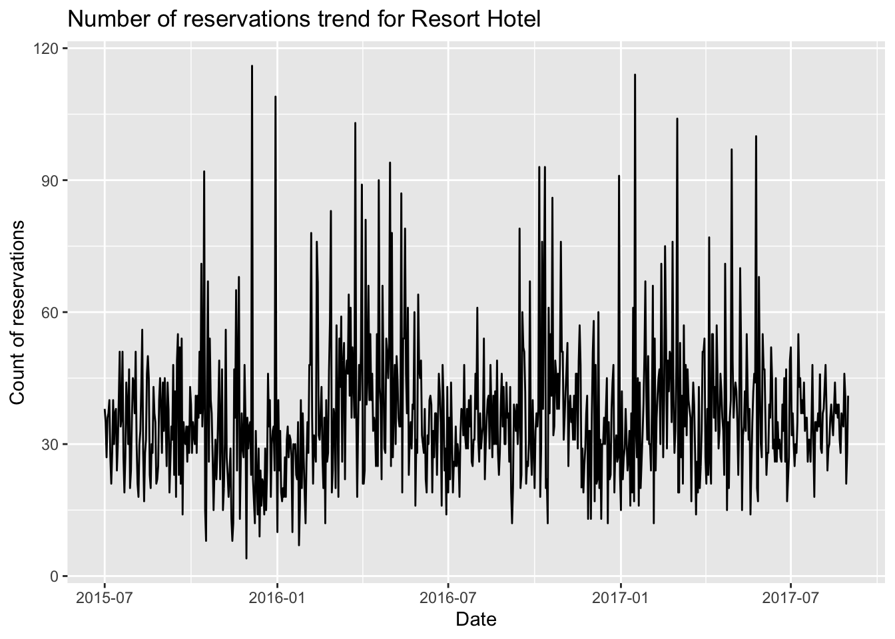
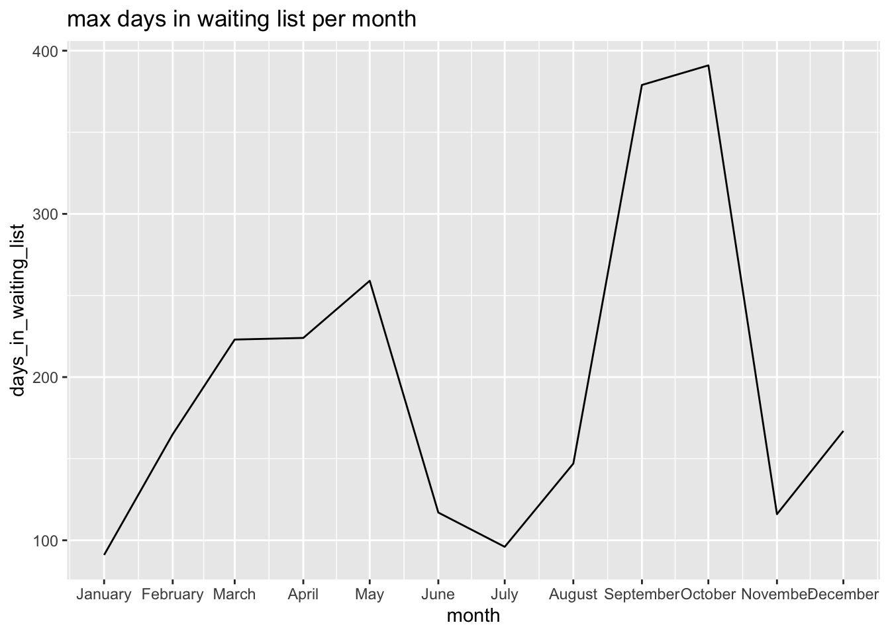

Code
library(tidyverse)
library(ggplot2)
knitr::opts_chunk$set(echo = TRUE)Neha Jhurani
May 12, 2023
Rows: 119390 Columns: 32
── Column specification ────────────────────────────────────────────────────────
Delimiter: ","
chr (13): hotel, arrival_date_month, meal, country, market_segment, distrib...
dbl (18): is_canceled, lead_time, arrival_date_year, arrival_date_week_numb...
date (1): reservation_status_date
ℹ Use `spec()` to retrieve the full column specification for this data.
ℹ Specify the column types or set `show_col_types = FALSE` to quiet this message. hotel is_canceled lead_time arrival_date_year
Length:119390 Min. :0.0000 Min. : 0 Min. :2015
Class :character 1st Qu.:0.0000 1st Qu.: 18 1st Qu.:2016
Mode :character Median :0.0000 Median : 69 Median :2016
Mean :0.3704 Mean :104 Mean :2016
3rd Qu.:1.0000 3rd Qu.:160 3rd Qu.:2017
Max. :1.0000 Max. :737 Max. :2017
arrival_date_month arrival_date_week_number arrival_date_day_of_month
Length:119390 Min. : 1.00 Min. : 1.0
Class :character 1st Qu.:16.00 1st Qu.: 8.0
Mode :character Median :28.00 Median :16.0
Mean :27.17 Mean :15.8
3rd Qu.:38.00 3rd Qu.:23.0
Max. :53.00 Max. :31.0
stays_in_weekend_nights stays_in_week_nights adults
Min. : 0.0000 Min. : 0.0 Min. : 0.000
1st Qu.: 0.0000 1st Qu.: 1.0 1st Qu.: 2.000
Median : 1.0000 Median : 2.0 Median : 2.000
Mean : 0.9276 Mean : 2.5 Mean : 1.856
3rd Qu.: 2.0000 3rd Qu.: 3.0 3rd Qu.: 2.000
Max. :19.0000 Max. :50.0 Max. :55.000
children babies meal country
Min. : 0.0000 Min. : 0.000000 Length:119390 Length:119390
1st Qu.: 0.0000 1st Qu.: 0.000000 Class :character Class :character
Median : 0.0000 Median : 0.000000 Mode :character Mode :character
Mean : 0.1039 Mean : 0.007949
3rd Qu.: 0.0000 3rd Qu.: 0.000000
Max. :10.0000 Max. :10.000000
NA's :4
market_segment distribution_channel is_repeated_guest
Length:119390 Length:119390 Min. :0.00000
Class :character Class :character 1st Qu.:0.00000
Mode :character Mode :character Median :0.00000
Mean :0.03191
3rd Qu.:0.00000
Max. :1.00000
previous_cancellations previous_bookings_not_canceled reserved_room_type
Min. : 0.00000 Min. : 0.0000 Length:119390
1st Qu.: 0.00000 1st Qu.: 0.0000 Class :character
Median : 0.00000 Median : 0.0000 Mode :character
Mean : 0.08712 Mean : 0.1371
3rd Qu.: 0.00000 3rd Qu.: 0.0000
Max. :26.00000 Max. :72.0000
assigned_room_type booking_changes deposit_type agent
Length:119390 Min. : 0.0000 Length:119390 Length:119390
Class :character 1st Qu.: 0.0000 Class :character Class :character
Mode :character Median : 0.0000 Mode :character Mode :character
Mean : 0.2211
3rd Qu.: 0.0000
Max. :21.0000
company days_in_waiting_list customer_type adr
Length:119390 Min. : 0.000 Length:119390 Min. : -6.38
Class :character 1st Qu.: 0.000 Class :character 1st Qu.: 69.29
Mode :character Median : 0.000 Mode :character Median : 94.58
Mean : 2.321 Mean : 101.83
3rd Qu.: 0.000 3rd Qu.: 126.00
Max. :391.000 Max. :5400.00
required_car_parking_spaces total_of_special_requests reservation_status
Min. :0.00000 Min. :0.0000 Length:119390
1st Qu.:0.00000 1st Qu.:0.0000 Class :character
Median :0.00000 Median :0.0000 Mode :character
Mean :0.06252 Mean :0.5714
3rd Qu.:0.00000 3rd Qu.:1.0000
Max. :8.00000 Max. :5.0000
reservation_status_date
Min. :2014-10-17
1st Qu.:2016-02-01
Median :2016-08-07
Mean :2016-07-30
3rd Qu.:2017-02-08
Max. :2017-09-14
[1] "hotel" "is_canceled"
[3] "lead_time" "arrival_date_year"
[5] "arrival_date_month" "arrival_date_week_number"
[7] "arrival_date_day_of_month" "stays_in_weekend_nights"
[9] "stays_in_week_nights" "adults"
[11] "children" "babies"
[13] "meal" "country"
[15] "market_segment" "distribution_channel"
[17] "is_repeated_guest" "previous_cancellations"
[19] "previous_bookings_not_canceled" "reserved_room_type"
[21] "assigned_room_type" "booking_changes"
[23] "deposit_type" "agent"
[25] "company" "days_in_waiting_list"
[27] "customer_type" "adr"
[29] "required_car_parking_spaces" "total_of_special_requests"
[31] "reservation_status" "reservation_status_date" #To plot the reservation trend at every month, I am creating a new column "arrival-year-month"
hotel_bookings_data <- hotel_bookings_data %>%
mutate(date_year = paste0(arrival_date_month," ",arrival_date_day_of_month," ",arrival_date_year))
# Time Dependent Visualization for reservation trend at Resort Hotel
resort_hotel_reservations <- hotel_bookings_data %>%
filter(reservation_status=="Check-Out",hotel=="Resort Hotel") %>% select(date_year)
resort_hotel_reservations <- resort_hotel_reservations %>% mutate(reservation_count=1)
resort_hotel_reservations <- resort_hotel_reservations %>% group_by(date_year) %>% summarise_all(sum)
resort_hotel_reservations <- resort_hotel_reservations %>% mutate(full_date=as.Date(resort_hotel_reservations$date_year,format="%B %d %Y"))
resort_hotel_reservations %>% ggplot(aes(x=full_date,y=reservation_count)) + geom_line() + xlab("Date") + ylab("Count of reservations")+labs(title="Number of reservations trend for Resort Hotel")
# Visualizing Part-Whole Relationships - Showing the trend between the months and the mean waiting days associated with it
grouped <- hotel_bookings_data %>%
select(arrival_date_month,days_in_waiting_list) %>%
group_by(arrival_date_month) %>%
summarise_all(max) %>%
mutate(month=as.Date(paste(arrival_date_month,"-01-2021",sep=""),"%B-%d-%Y"))
grouped %>% ggplot(aes(month,days_in_waiting_list))+geom_line() +scale_x_date(date_labels = "%B",date_breaks = "1 month")+ labs(title="max days in waiting list per month")
---
title: "Visualizing time and relationship trends in a dataset"
author: "Neha Jhurani"
desription: "Using ggplot2 to visualize: hotel_bookings.csv"
date: "05/12/2023"
format:
html:
toc: true
code-fold: true
code-copy: true
code-tools: true
categories:
- challenge6
- Neha Jhurani
- hotel_bookings.csv
---
```{r}
#| label: setup
#| warning: false
library(tidyverse)
library(ggplot2)
knitr::opts_chunk$set(echo = TRUE)
```
## Visualizing Hotel Booking Dataset
```{r}
library(readr)
#reading hotel_bookings csv data
hotel_bookings_data <- read_csv("_data/hotel_bookings.csv")
summary(hotel_bookings_data)
#The data shows the hotel bookings and their corresponding prices in NYC. The data is about only two hotels - Resort Hotel and City Hotel with three reservation status values - checked-out/ cancelled/ No-Show
#extracting all the column names - It has 32 columns
colnames(hotel_bookings_data)
#To plot the reservation trend at every month, I am creating a new column "arrival-year-month"
hotel_bookings_data <- hotel_bookings_data %>%
mutate(date_year = paste0(arrival_date_month," ",arrival_date_day_of_month," ",arrival_date_year))
# Time Dependent Visualization for reservation trend at Resort Hotel
resort_hotel_reservations <- hotel_bookings_data %>%
filter(reservation_status=="Check-Out",hotel=="Resort Hotel") %>% select(date_year)
resort_hotel_reservations <- resort_hotel_reservations %>% mutate(reservation_count=1)
resort_hotel_reservations <- resort_hotel_reservations %>% group_by(date_year) %>% summarise_all(sum)
resort_hotel_reservations <- resort_hotel_reservations %>% mutate(full_date=as.Date(resort_hotel_reservations$date_year,format="%B %d %Y"))
resort_hotel_reservations %>% ggplot(aes(x=full_date,y=reservation_count)) + geom_line() + xlab("Date") + ylab("Count of reservations")+labs(title="Number of reservations trend for Resort Hotel")
# Visualizing Part-Whole Relationships - Showing the trend between the months and the mean waiting days associated with it
grouped <- hotel_bookings_data %>%
select(arrival_date_month,days_in_waiting_list) %>%
group_by(arrival_date_month) %>%
summarise_all(max) %>%
mutate(month=as.Date(paste(arrival_date_month,"-01-2021",sep=""),"%B-%d-%Y"))
grouped %>% ggplot(aes(month,days_in_waiting_list))+geom_line() +scale_x_date(date_labels = "%B",date_breaks = "1 month")+ labs(title="max days in waiting list per month")
# We can see a peak in waiting days during summer and winter times representing the holiday season when people mostly travel.
```